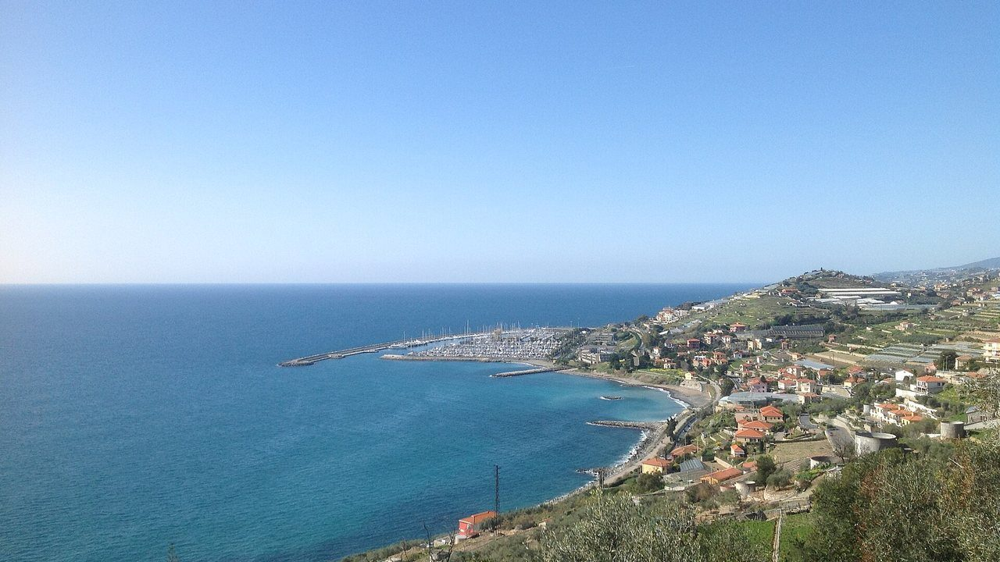

Race, The Poggio

Behind
Best +0:01
371W
Target 418 W-47 W
- Cadence
- 87rpm
- Heart
- 140bpm
- Speed
- 26.5km/h
Work8 of 15
1:34
Next: · 3:00 at level 16
+0.0%
104 m climbed
4.82 km
19
Resistance / 32
Solo races your best-time ghost: position reads Ahead or Behind, and solo alone gets a Pause button. Frozen at 11:56.